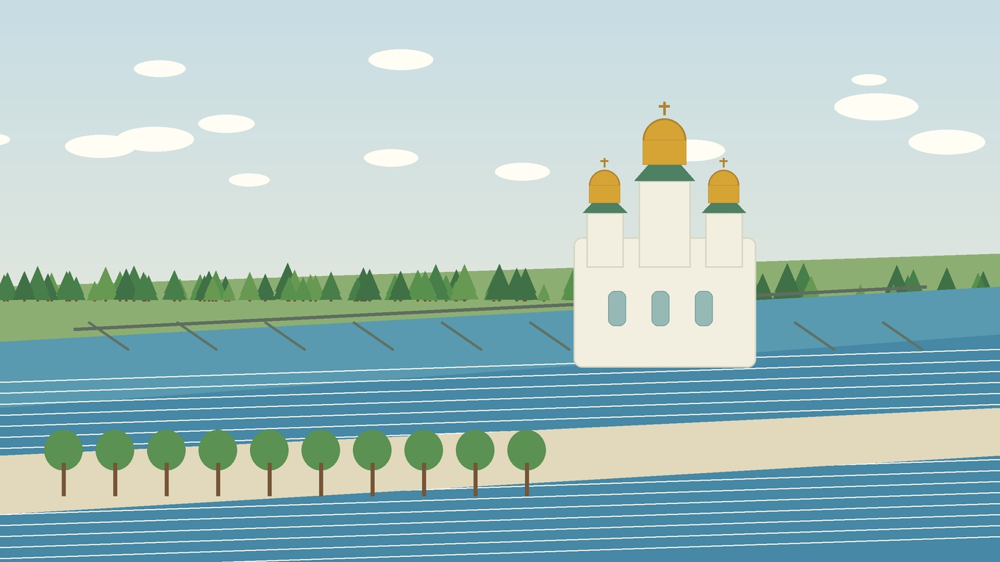

Главная / Ярославская область / центральная волжская зона

Ярославская область · центральная Волга
Что посадить
Что посадить
в центральной волжской зоне
Средняя по условиям часть области вокруг Ярославля и волжских городов. Здесь хорошо растут базовый огород, ягодники и районированный плодовый сад, а теплолюбивые культуры лучше начинать под укрытием.
Культуры и рекомендации
По умолчанию культуры отсортированы по надёжности: сначала надёжные, затем рекомендованные, с укрытием и рискованные. Сроки ориентировочные — их стоит уточнять по погоде конкретного сезона.
| Культура | Категория | Рекомендация | Где лучше | Сроки | Комментарий |
|---|---|---|---|---|---|
| Гороховощная бобовая культура | Овощи | Надёжно | Открытый грунт | Посев: конец апреля — май. | Ранний посев даёт стабильный урожай до летней жары. |
| Жимолостьягодный кустарник | Ягодные | Надёжно | Сад | Посадка: апрель или сентябрь; сбор — июнь. | Очень надёжная ягода для волжской зоны, хорошо переносит морозы и раннюю весну. |
| Кабачоктыквенная культура | Овощи | Надёжно | Открытый грунт | Посев или высадка: конец мая — начало июня. | Обычно удаётся без теплицы, особенно на компостной или тёплой гряде. |
| Капуста белокочаннаяовощная культура | Овощи | Надёжно | Открытый грунт | Рассада: апрель; высадка: май. | Климат подходит для капусты; важно держать полив ровным и следить за вредителями. |
| Картофельклубнеплод | Овощи | Надёжно | Открытый грунт | Посадка: май; уборка: август–сентябрь. | Одна из самых стабильных культур области; на тяжёлых почвах полезны окучивание и рыхление. |
| Крыжовникягодный кустарник | Ягодные | Надёжно | Сад | Посадка: апрель или сентябрь. | Надёжен в саду, но требует света и прореживания для снижения болезней. |
| Лук репчатыйовощная культура | Овощи | Надёжно | Открытый грунт | Севок: май; уборка: август. | Хорошо удаётся на сухой солнечной гряде; в сырое лето важна уборка в срок. |
| Малинаягодный кустарник | Ягодные | Надёжно | Сад | Посадка: апрель или сентябрь. | Стабильна при регулярном омоложении и хорошей освещённости рядов. |
| Морковькорнеплод | Овощи | Надёжно | Открытый грунт | Посев: конец апреля — май. | Даёт хороший результат на рыхлых грядах; тяжёлую почву лучше улучшать компостом. |
| Редисранний корнеплод | Овощи | Надёжно | Открытый грунт | Посев: апрель–май и август. | Культура короткого сезона: подходит для ранних и повторных посевов. |
| Салат листовойзелёная культура | Зелень | Надёжно | Открытый грунт | Посев: апрель–июнь, повторно — август. | Хорошо растёт весной и в конце лета, в жару может стрелковаться. |
| Свёклакорнеплод | Овощи | Надёжно | Открытый грунт | Посев: май, после прогрева почвы. | Надёжна при достаточном питании и прореживании всходов. |
| Смородина чёрнаяягодный кустарник | Ягодные | Надёжно | Сад | Посадка: апрель или сентябрь. | Любит умеренную влажность и хорошо подходит для садов у Волги и малых рек. |
| Укроппряная зелень | Зелень | Надёжно | Открытый грунт | Посев: апрель–июль, с повторениями. | Можно подсевать несколько раз за сезон; культура неприхотлива к погоде. |
| Яблоняплодовое дерево | Плодовые | Надёжно | Сад | Посадка: апрель или сентябрь. | Для зоны подходит хорошо, особенно районированные летние и осенние сорта. |
| Брокколикапустная культура | Овощи | Рекомендовано | Открытый грунт | Рассада: апрель; высадка: май. | Часто удаётся в умеренное лето; при жаре нужны полив и своевременная срезка. |
| Вишняплодовое дерево | Плодовые | Рекомендовано | Защищённый сад | Посадка: апрель или сентябрь. | Растёт лучше на солнечном месте без сырой низины; нужны устойчивые сорта. |
| Грушаплодовое дерево | Плодовые | Рекомендовано | Защищённый сад | Посадка: апрель; формировка — ранняя весна. | Возможна зимостойкими сортами, особенно на возвышенных местах и у защищённых садов. |
| Земляника садоваяягодная культура | Ягодные | Рекомендовано | Садовая гряда | Посадка: май или август. | Лучше выращивать на высокой гряде с мульчей, чтобы ягода меньше страдала от сырости. |
| Огурецтеплолюбивый овощ | Овощи | Рекомендовано | Открытый грунт, при холодных ночах — под укрытием | Рассада: май; высадка: конец мая — июнь. | В тёплое лето даёт урожай и в открытом грунте, но дуги делают старт надёжнее. |
| Сливаплодовое дерево | Плодовые | Рекомендовано | Сад | Посадка: апрель или сентябрь. | Зимостойкие сорта подходят для солнечных садов с дренированной почвой. |
| Томаттеплолюбивый овощ | Овощи | Рекомендовано | Открытый грунт, лучше с временным укрытием | Рассада: март; высадка: конец мая — начало июня. | Ранние сорта удаются, но от фитофторы помогают проветривание и защита от холодной росы. |
| Тыкватыквенная культура | Овощи | Рекомендовано | Тёплая гряда | Рассада или посев: конец мая — начало июня. | На солнечной тёплой гряде вызревают ранние и среднеранние сорта. |
| Баклажантеплолюбивый овощ | Овощи | С укрытием / уходом | Теплица | Рассада: февраль–март; высадка: конец мая. | В открытом грунте нестабилен; в теплице получает нужную сумму тепла. |
| Дынябахчевая культура | Бахчевые | С укрытием / уходом | Тёплая гряда под укрытием | Рассада: апрель; высадка: конец мая — июнь. | Можно пробовать ранние сорта под плёнкой, с сухим тёплым основанием. |
| Перец сладкийтеплолюбивый овощ | Овощи | С укрытием / уходом | Теплица | Рассада: февраль–март; высадка: конец мая. | Для стабильного урожая лучше теплица или высокий парник. |
| Абрикосплодовое дерево | Плодовые | Рискованно | Экспериментальный сад | Посадка: весна; цветение требует защиты от заморозков. | Пробуют на самых тёплых местах, но возвратные заморозки часто повреждают цветки. |
| Арбузбахчевая культура | Бахчевые | Рискованно | Тёплая гряда под укрытием | Рассада: апрель; высадка: конец мая — июнь. | Урожай зависит от очень тёплого лета и ранних сортов; как основная культура ненадёжен. |
| Персикплодовое дерево | Плодовые | Рискованно | Экспериментальный сад | Посадка: весна; зимняя защита обязательна. | Зимостойкость недостаточна для стабильного сада; возможен только как опыт. |
По выбранным фильтрам культур не найдено.